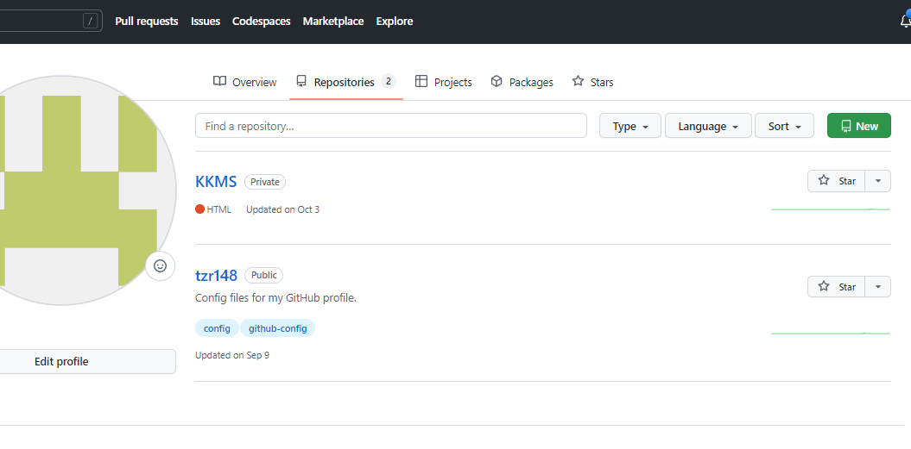

Let's start with the GitHub beginner level!
Here is the following instructions for making a repository.
- Open repositories page of your GitHub Account.

- Create new repository by a name that is available.
- Make the repository private if it needs to be private.
These are the commands to push a visual studio code project to github.
- Listed are the commands in picture as a help that needs to be executed one by one.
- Open a Folder in Visual Studio to associate it with GitHub.
- git init command to initialize and make a git file associated with that folder.
- git add . to add all files to the staging area.
- git commit -m "Added index.html" is to commit files to the local repository.
- git branch -M main is renaming the branch from master to main.
- git remote add origin https://github.com/tzr148/Mobile-Computing.git is adding origin to remote directory.
- git push -u origin main is pushing all the data from local repository to remote repository.
- Our Project is active on our respective github link.
- Here is the git status command to view the git status.
____________
The End